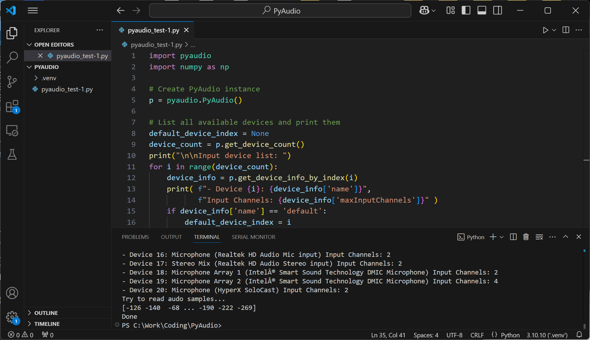
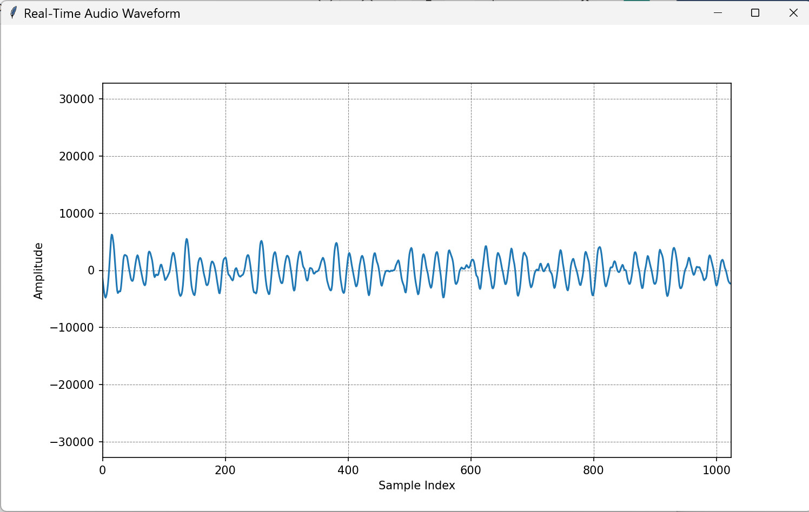
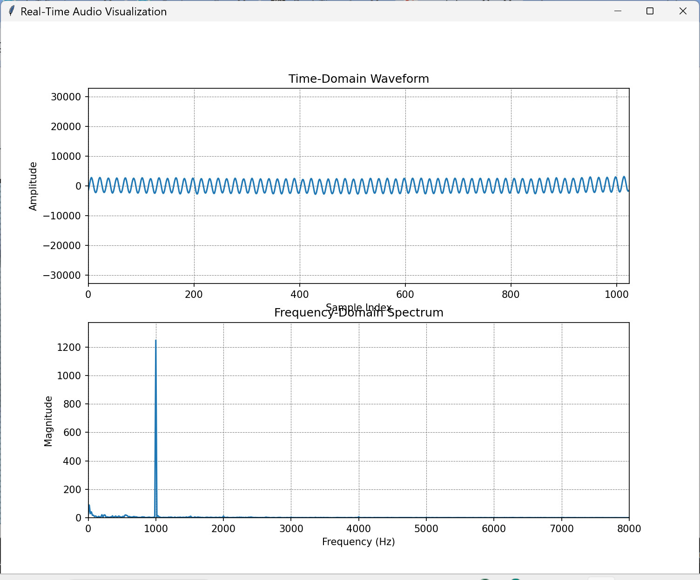
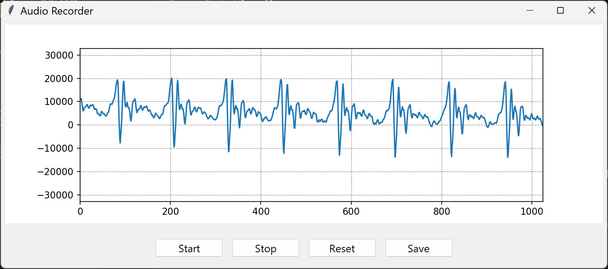

ตัวอย่างการเขียนโค้ด Python เพื่ออ่านข้อมูลเสียงจากไมโครโฟน#
▷ การทดลองใช้ไลบรารี PyAudio#
โค้ด Python ต่อไปนี้สาธิตการใช้คำสั่งหรือฟังก์ชันของ PyAudio โดยให้แสดงรายการของอุปกรณ์อินพุตในระบบ เช่น อินพุตจากไมโครโฟน (Microphone) ซึ่งอาจจะเป็น Built-in Microphone หรือ USB Microphone หรือ Bluetooth Microphone ก็ได้
ก่อนทดลองใช้โค้ดตัวอย่าง แนะนำใช้ VS Code IDE และติดตั้ง Python Extension for Visual Studio Code (by Microsoft) และให้สร้างไดเรกทอรีใหม่ และสร้าง Python Virtual Environment เพื่อติดตั้งแพ็คเกจต่าง ๆ ที่จะต้องใช้ต่อไปนี้
$ pip3 install pyaudio matplotlib numpy
ในกรณีที่ใช้ระบบปฏิบัติการ Ubuntu (เช่น 22.04) จะต้องมีการติดตั้งไลบรารีสำหรับ Linux ดังนี้ ก่อนติดตั้ง PyAudio
$ sudo apt install portaudio19-dev
ในบทความนี้ ได้ลองใช้ PyAudio เวอร์ชัน v0.2.14 ร่วมกับ Python 3.10.10 และทดลองเปิดใช้งานไมโครโฟนของระบบที่มีการตั้งค่าตัวเลือกไว้เป็น default
- มีการตั้งค่าอัตราในการชักตัวอย่าง (Sample Rate) ให้เท่ากับ 16kHz
- เลือกช่องสัญญาณเสียงแบบ Mono ไม่ใช่ Stereo ข้อมูลที่ได้จะเป็นเลขจำนวนเต็มขนาด 16 บิต
(
int16) - อ่านข้อมูลมาเก็บไว้ในบัฟเฟอร์ที่มีความจุ (Buffer Length) เท่ากับ 1024
ข้อมูลเหล่านี้จะถูกแปลงให้เป็นอาร์เรย์ของข้อมูลแบบ
np.int16ด้วย NumPy Array
import pyaudio
import numpy as np
# Create PyAudio instance
p = pyaudio.PyAudio()
# List all available devices and print them
default_device_index = None
device_count = p.get_device_count()
print("\n\nInput device list: ")
for i in range(device_count):
device_info = p.get_device_info_by_index(i)
print( f"- Device {i}: {device_info['name']}",
f"Input Channels: {device_info['maxInputChannels']}" )
if device_info['name'] == 'default':
default_device_index = i
# Audio stream parameters
FORMAT = pyaudio.paInt16 # 16-bit audio format
CHANNELS = 1 # Mono audio
SAMPLE_RATE = 16000 # Sample rate (16kHz)
BUF_LEN = 1024 # Number of frames per buffer
GAIN = 2.0 # Amplification gain factor
# Try to open the selected input device
# Open an audio stream for reading (microphone input)
stream = p.open(format=FORMAT,
channels=CHANNELS,
rate=SAMPLE_RATE,
input=True,
input_device_index=default_device_index,
frames_per_buffer=BUF_LEN)
if stream:
print("Try to read audo samples...")
audio_data = np.frombuffer(stream.read(BUF_LEN), dtype=np.int16)
print( audio_data )
stream.close()
print( 'Done' )

รูป: ตัวอย่างการใช้ VS Code IDE และรันโค้ดตัวอย่าง
▷ การแสดงรูปคลื่นสัญญาณเสียงในโดเมนเวลา#
ตัวอย่างโค้ดถัดไป สาธิตการอ่านข้อมูลเสียง ชุดละ 1024 ตัวเลขมีขนาด 16 บิต แล้วนำมาแสดงผลเป็นรูปกราฟสัญญาณเสียงตามลำดับ โดยใช้คำสั่งของ matplotlib และใช้ TkInter สำหรับส่วนแสดงผลเชิงกราฟสำหรับการทำงานของ Python ข้อมูลเสียงและกราฟ จะถูกอัปเดทและแสดงผลทุก ๆ 20 มิลลิวินาที
import warnings
warnings.filterwarnings("ignore") # Suppress all warnings
import sys
import pyaudio
import numpy as np
import matplotlib.pyplot as plt
from matplotlib.backends.backend_tkagg import FigureCanvasTkAgg
import tkinter as tk
# Audio stream parameters
FORMAT = pyaudio.paInt16 # 16-bit audio format
CHANNELS = 1 # Mono audio
SAMPLE_RATE = 16000 # Sample rate (16kHz)
BUF_LEN = 1024 # Number of frames per buffer
GAIN = 4.0 # Amplification gain factor
# Create PyAudio instance
p = pyaudio.PyAudio()
# Open an audio stream for reading (microphone input)
stream = p.open(format=FORMAT,
channels=CHANNELS,
rate=SAMPLE_RATE,
input=True,
input_device_index=None,
frames_per_buffer=BUF_LEN)
# Set the value range (16-bit audio samples): y_min and y_max
value_range = [-2**15, 2**15]
# Create a subplot
fig, ax = plt.subplots(figsize=(10, 6))
x = np.arange(0, BUF_LEN)
line, = ax.plot(x, np.random.rand(BUF_LEN))
ax.set_ylim(value_range[0], value_range[1])
ax.set_xlim(0, BUF_LEN)
ax.grid(True, linestyle='--', color='gray', linewidth=0.5)
ax.set_xlabel("Sample Index") # X-axis label
ax.set_ylabel("Amplitude") # Y-axis label
# Set up the Tkinter window
root = tk.Tk()
root.title("Real-Time Audio Waveform")
#root.geometry("1024x576")
# Embed Matplotlib figure into Tkinter window using FigureCanvasTkAgg
canvas = FigureCanvasTkAgg(fig, master=root)
canvas.get_tk_widget().pack(fill=tk.BOTH, expand=True)
def on_close():
sys.exit()
# Update function for real-time visualization
def update_plot():
try:
samples = stream.read(BUF_LEN, exception_on_overflow=False)
audio_data = GAIN * np.frombuffer(samples, dtype=np.int16)
audio_data = np.clip(audio_data, value_range[0], value_range[1])
# Update time-domain plot
line.set_ydata(audio_data)
# Update draw canvas
canvas.draw()
root.after(20, update_plot) # Schedule next update
except KeyboardInterrupt as e:
on_close()
root.protocol("WM_DELETE_WINDOW", on_close)
try:
update_plot() # Start the real-time plotting
root.mainloop() # Start the Tkinter main loop
except KeyboardInterrupt:
root.quit()
root.destroy()

รูป: การแสดงรูปคลื่นสัญญาณเสียงโดยใช้โค้ดตัวอย่าง
▷ การแสดงรูปคลื่นสัญญาณเสียงในโดเมนเวลาและความถี่#
โค้ดตัวอย่างถัดไปสาธิตการแสดงรูปคลื่นสัญญาณที่มีการเปลี่ยนแปลงในเชิงเวลา และแสดงสเปกตรัมเชิงความถี่ของสัญญาณ โดยใช้การแปลงแบบ FFT (Fast-Fourier Transform)
import warnings
warnings.filterwarnings("ignore") # Suppress all warnings
import sys
import pyaudio
import numpy as np
import matplotlib.pyplot as plt
from matplotlib.backends.backend_tkagg import FigureCanvasTkAgg
import tkinter as tk
# Audio stream parameters
FORMAT = pyaudio.paInt16 # 16-bit audio format
CHANNELS = 1 # Mono audio
SAMPLE_RATE = 16000 # Sample rate (16kHz)
BUF_LEN = 1024 # Number of frames per buffer
GAIN = 4.0 # Amplification gain factor
# Create PyAudio instance
p = pyaudio.PyAudio()
# Open an audio stream for reading (microphone input)
stream = p.open(format=FORMAT,
channels=CHANNELS,
rate=SAMPLE_RATE,
input=True,
input_device_index=None,
frames_per_buffer=BUF_LEN)
# Set the value range (16-bit audio samples): y_min and y_max
value_range = [-2**15, 2**15]
# Create figure and subplots
fig, (ax_time, ax_freq) = plt.subplots(2, 1, figsize=(10, 8))
x_time = np.arange(0, BUF_LEN)
line_time, = ax_time.plot(x_time, np.random.rand(BUF_LEN))
ax_time.set_ylim(value_range[0], value_range[1])
ax_time.set_xlim(0, BUF_LEN)
ax_time.grid(True, linestyle='--', color='gray', linewidth=0.5)
ax_time.set_xlabel("Sample Index")
ax_time.set_ylabel("Amplitude")
ax_time.set_title("Time-Domain Waveform")
# FFT-based spectrum
x_freq = np.fft.rfftfreq(BUF_LEN, d=1.0/SAMPLE_RATE)
line_freq, = ax_freq.plot(x_freq, np.zeros_like(x_freq))
ax_freq.set_xlim(0, SAMPLE_RATE / 2)
ax_freq.set_ylim(0, 1)
ax_freq.grid(True, linestyle='--', color='gray', linewidth=0.5)
ax_freq.set_xlabel("Frequency (Hz)")
ax_freq.set_ylabel("Magnitude")
ax_freq.set_title("Frequency-Domain Spectrum")
# Set up the Tkinter window
root = tk.Tk()
root.title("Real-Time Audio Visualization")
# Embed Matplotlib figure into Tkinter window
canvas = FigureCanvasTkAgg(fig, master=root)
canvas.get_tk_widget().pack(fill=tk.BOTH, expand=True)
def on_close():
sys.exit()
def update_plot():
try:
samples = stream.read(BUF_LEN, exception_on_overflow=False)
audio_data = GAIN * np.frombuffer(samples, dtype=np.int16)
audio_data = np.clip(audio_data, value_range[0], value_range[1])
# Update time-domain plot
line_time.set_ydata(audio_data)
# Compute and update frequency-domain plot (FFT)
fft_data = np.abs(np.fft.rfft(audio_data)) / BUF_LEN
line_freq.set_ydata(fft_data)
ax_freq.set_ylim(0, np.max(fft_data) * 1.1)
# Update draw canvas
canvas.draw()
root.after(20, update_plot) # Schedule next update
except KeyboardInterrupt as e:
on_close()
root.protocol("WM_DELETE_WINDOW", on_close)
try:
update_plot()
root.mainloop()
except KeyboardInterrupt:
root.quit()
root.destroy()
finally:
on_close()

รูป: การแสดงรูปคลื่นสัญญาณเสียงในโดเมนเวลาและความถี่ (ทดลองใช้สัญญาณเสียงทดสอบ ความถี่ 1kHz ซึ่งจะเห็นได้ว่า สเปกตรัมจะมีขนาดสูงสุดตรงความถี่ดังกล่าว)
▷ การแสดงรูปคลื่นสัญญาณเสียงและบันทึกข้อมูลลงไฟล์ .wav#
ถัดไปเป็นตัวอย่างโค้ดสำหรับการอ่านข้อมูลเสียงและแสดงรูปคลื่นสัญญาณ ผู้ใช้สามารถกดปุ่มเริ่มบันทึกข้อมูลเสียง
(Start) และหยุดการบันทึกเสียง (Stop) แต่จะบันทึกเสียงไม่เกิน 5 วินาที
หรือ จะกดปุ่มรีเซต (Reset) เพื่อเคลียร์ข้อมูลในบัฟเฟอร์ หากกดปุ่ม Save ก็จะได้ไฟล์เอาต์พุต
เป็นไฟล์ .wav (ชื่อ sound.wav)
import sys
import time
import pyaudio
import wave
import numpy as np
import tkinter as tk
from tkinter import ttk
import matplotlib.pyplot as plt
from matplotlib.backends.backend_tkagg import FigureCanvasTkAgg
import threading
#####################################################################
# Constants
FORMAT = pyaudio.paInt16 # 16-bit audio format
CHANNELS = 1 # Mono audio
SAMPLE_RATE = 16000 # Sample rate (16kHz)
BUF_LEN = 1024 # Number of frames per buffer
GAIN = 5.0
AMPLITUDE_RANGE = [-2**15, 2**15] # For 16-bit audio samples
#####################################################################
# Matplotlib figure and axis setup for waveform visualization
fig, ax = plt.subplots(figsize=(9,3))
x = np.arange(0, BUF_LEN)
line, = ax.plot(x, np.random.rand(BUF_LEN))
ax.set_ylim(AMPLITUDE_RANGE[0], AMPLITUDE_RANGE[1])
ax.set_xlim(0, BUF_LEN)
ax.grid(True, linestyle='--', color='gray', linewidth=0.5)
#####################################################################
# PyAudio settings
p = pyaudio.PyAudio()
audio_data = []
duration = 5 # 5 seconds
stop_time = time.time() + 1e6
stop_recording = False
# Open the audio stream
stream = p.open(format=FORMAT,
channels=CHANNELS,
rate=SAMPLE_RATE,
input=True,
frames_per_buffer=BUF_LEN)
#####################################################################
# Tk callback functions
# Audio start/stop/reset/save functions
def start_cb():
global audio_data, stop_recording, stop_time, duration
stop_recording = False
stop_time = time.time() + duration
audio_data = [] # Clear saved audio data
print("Start")
def stop_cb():
global stop_recording
stop_recording = True
print("Stop")
def reset_cb():
global audio_data, stop_recording
stop_recording = False
audio_data = [] # Clear audio data
line.set_ydata(np.random.rand(BUF_LEN))
canvas.draw()
print("Reset")
def save_cb():
global audio_data
print("Save")
if not audio_data:
print("No audio data to save.")
return
# Flatten audio data
audio_data_flat = np.concatenate(audio_data)
# Save audio data as a .wav file
filename = "sound.wav"
with wave.open(filename, 'wb') as wf:
wf.setnchannels(CHANNELS)
wf.setsampwidth(p.get_sample_size(FORMAT))
wf.setframerate(SAMPLE_RATE)
wf.writeframes(audio_data_flat.tobytes())
print(f"Saved audio data to: {filename}")
#####################################################################
# Tkinter setup
root = tk.Tk()
root.title("Audio Recorder")
# Embed Matplotlib figure into Tkinter window using FigureCanvasTkAgg
canvas = FigureCanvasTkAgg(fig, master=root)
canvas.get_tk_widget().pack(padx=10, pady=10, fill="both", expand=True)
# Frame for the controls (buttons and duration input)
control_frame = ttk.Frame(root)
control_frame.pack(fill="y", padx=20, pady=20)
# Start, Stop, Reset, Save Buttons
start_button = ttk.Button(control_frame, text="Start", command=start_cb)
start_button.pack(side="left", padx=10, pady=5)
stop_button = ttk.Button(control_frame, text="Stop", command=stop_recording)
stop_button.pack(side="left", padx=10, pady=5)
reset_button = ttk.Button(control_frame, text="Reset", command=reset_cb)
reset_button.pack(side="left", padx=10, pady=5)
save_button = ttk.Button(control_frame, text="Save", command=save_cb)
save_button.pack(side="left", padx=10, pady=5)
# Update the waveform plot
def update_waveform(audio_chunk):
line.set_ydata(audio_chunk)
canvas.draw()
# Continuous audio visualization
def visualize_audio():
global stream, audio_data, duration, stop_recording
max_len = SAMPLE_RATE*duration
while True:
audio_chunk = np.frombuffer(stream.read(BUF_LEN), dtype=np.int16)
if time.time() >= stop_time:
stop_recording = True
if not stop_recording:
audio_data.append(audio_chunk)
while len(audio_data) > max_len:
audio_data.pop(0)
# Update the waveform
update_waveform(audio_chunk)
time.sleep(0.01)
# Start the visualization thread (before the GUI loop)
threading.Thread(target=visualize_audio, daemon=True).start()
def on_close():
sys.exit()
root.protocol("WM_DELETE_WINDOW", on_close)
try:
# Start Tkinter main loop
root.mainloop()
except KeyboardInterrupt:
root.quit()
root.destroy()
finally:
on_close()

รูป: ตัวอย่างการทำงานของโค้ด
▷ การสื่อสารข้อมูลเสียงระหว่างคอมพิวเตอร์ด้วยโพรโตคอล UDP#
ตัวอย่างถัดไปสาธิตการเขียนโค้ด โดยแบ่งการทำงานออกเป็น 2 ส่วน และมีสถาปัตยกรรมการทำงานแบบ Server-Client Model และสื่อสารข้อมูลกันผ่านระบบเครือข่ายได้ ด้วยโพรโตคอลที่เรียกว่า UDP (User Datagram Protocol)
- ส่วนแรกทำหน้าที่เป็น UDP Server อ่านข้อมูลเสียงจากไมโครโฟน โดยใช้ PyAudio และรอให้มีการเชื่อมต่อเข้ามาโดย UDP Receiver เพื่อส่งข้อมูลเสียงกลับไป
- ส่วนที่สองทำหน้าที่เป็น UDP Client คอยรับข้อมูลจาก UDP Server เพื่อนำข้อมูลดังกล่าวมาแสดงรูปคลื่นสัญญาณเสียง
ในโค้ดตัวอย่างได้เลือกใช้พอร์ตหมายเลข 5005 สำหรับการสื่อสารข้อมูลด้วย UDP
จำนวนข้อมูลในแต่ละครั้งของการอ่านและส่งข้อมูลคือ 1024 และใช้อัตราการชักตัวอย่าง Sample Rate
เท่ากับ 16kHz เป็นตัวอย่าง
โค้ด: audio_udp_server.py
import warnings
import time
import socket
import pyaudio
import numpy as np
warnings.filterwarnings("ignore") # Suppress all warnings
# Audio stream parameters
FORMAT = pyaudio.paInt16 # 16-bit audio format
CHANNELS = 1 # Mono audio
SAMPLE_RATE = 16000 # Sample rate (16kHz)
BUF_LEN = 1024 # Number of frames per buffer
GAIN = 4.0 # Amplification gain factor
# UDP server parameters
UDP_IP = "0.0.0.0" # Listen on all available interfaces
UDP_PORT = 5005 # Port number
# Create PyAudio instance
p = pyaudio.PyAudio()
# Open an audio stream for reading (microphone input)
stream = p.open(format=FORMAT,
channels=CHANNELS,
rate=SAMPLE_RATE,
input=True,
frames_per_buffer=BUF_LEN)
# Create UDP socket
sock = socket.socket(socket.AF_INET, socket.SOCK_DGRAM)
sock.setsockopt(socket.SOL_SOCKET, socket.SO_REUSEADDR, 1)
sock.bind((UDP_IP, UDP_PORT))
print(f"UDP server listening on {UDP_IP}:{UDP_PORT}")
try:
while True:
data = None
try:
# Wait for a client request
data, addr = sock.recvfrom(1024) # Buffer size is 1024 bytes
except ConnectionResetError:
pass
if data:
print(f"Received request from {addr}")
samples = stream.read(BUF_LEN, exception_on_overflow=False)
sock.sendto(samples, addr) # Send audio data to client
except KeyboardInterrupt:
print("Server shutting down...")
finally:
stream.stop_stream()
stream.close()
p.terminate()
sock.close()
โค้ด: audio_udp_client.py
import sys
import socket
import numpy as np
import matplotlib.pyplot as plt
import matplotlib.animation as animation
import struct
import tkinter as tk
from matplotlib.backends.backend_tkagg import FigureCanvasTkAgg
# Audio stream parameters
FORMAT = pyaudio.paInt16 # 16-bit audio format
CHANNELS = 1 # Mono audio
SAMPLE_RATE = 16000 # Sample rate (16kHz)
BUF_LEN = 1024 # Number of frames per buffer
GAIN = 4.0 # Amplification gain factor
# Create UDP socket
sock = socket.socket(socket.AF_INET, socket.SOCK_DGRAM)
sock.setsockopt(socket.SOL_SOCKET, socket.SO_REUSEADDR, 1)
sock.settimeout(1.0)
# Send initial request to server
sock.sendto(b"START", (SERVER_IP, SERVER_PORT))
# Initialize Tkinter window
root = tk.Tk()
root.title("Real-time Audio Waveform")
# Create Matplotlib figure
fig, ax = plt.subplots(figsize=(10, 6))
x = np.arange(BUF_LEN)
y = np.zeros(BUF_LEN)
line, = ax.plot(x, y, lw=2)
ax.set_ylim(-32768, 32767)
ax.set_xlim(0, BUF_LEN)
ax.set_xlabel("Sample Index")
ax.set_ylabel("Amplitude")
ax.set_title("Live Audio Waveform")
# Embed Matplotlib in Tkinter
canvas = FigureCanvasTkAgg(fig, master=root)
canvas.get_tk_widget().pack(fill=tk.BOTH, expand=True)
def on_close():
sys.exit()
def update_plot(frame):
try:
sock.sendto(b"REQ", (SERVER_IP, SERVER_PORT)) # Request new data
data, _ = sock.recvfrom(BUF_LEN * SAMPLE_WIDTH) # Receive data
samples = np.array(struct.unpack(f"{BUF_LEN}{FORMAT}", data))
line.set_ydata(samples)
except socket.timeout:
pass
except ConnectionResetError:
print("UDP server connection failed!")
on_close()
except KeyboardInterrupt:
on_close()
return line,
# Animate the plot
ani = animation.FuncAnimation(fig, update_plot,
interval=20, blit=True, save_count=1)
root.protocol("WM_DELETE_WINDOW", on_close)
try:
# Start Tkinter main loop
root.mainloop()
except KeyboardInterrupt:
root.quit()
root.destroy()
on_close()
ในการทดลอง ให้รันโค้ด audio_udp_server.py และ audio_udp_client.py
เพื่อให้ทั้งสองโปรแกรมทำงานพร้อม ๆ กัน ในเครื่องคอมพิวเตอร์เดียวกัน
แต่ถ้ารันโปรแกรมต่างเครื่องคอมพิวเตอร์กัน จะต้องมีการระบุหมายเลข IP ให้ถูกต้องด้วย
▷ กล่าวสรุป#
บทความนี้ได้นำเสนอโค้ดตัวอย่างในภาษา Python เพื่อสาธิตการใช้งาน PyAudio ในเบื้องต้น เพื่ออ่านข้อมูลเสียงจากไมโครโฟน มีการนำข้อมูลที่อ่านได้มาแสดงรูปคลื่นสัญญาณในเชิงเวลา และสเปกตรัมเชิงความถี่ด้วยการคำนวณตามวิธีการที่เรียกว่า FFT (Fast Fourier Transform) มีตัวอย่างการเขียนโค้ดเพื่อบันทึกข้อมูลเสียงให้เป็นไฟล์ .wav และยังมีตัวอย่างการรับส่งข้อมูลเสียงผ่านเครือข่ายด้วย UDP (User Datagram Protocol)
This work is licensed under a Creative Commons Attribution-ShareAlike 4.0 International License.
Created: 2025-03-26 | Last Updated: 2025-03-27